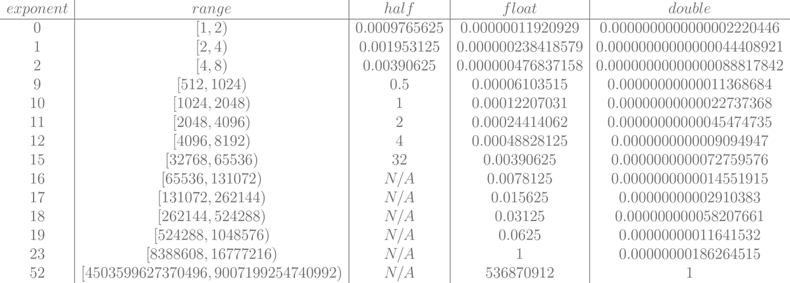

Written: October 13, 2025
There is a great helper in PyTorch torch.testing.assert_close I use it all the time. And sometimes it fails. If you are like me you might have looked at its definition when this is happens and seen this table: https://github.com/pytorch/pytorch/blob/5cedc5a0ff236529f76ac514805b825bc73e1a74/torch/testing/_comparison.py#L1418
+---------------------------+------------+----------+
| ``dtype`` | ``rtol`` | ``atol`` |
+===========================+============+==========+
| :attr:`~torch.float16` | ``1e-3`` | ``1e-5`` |
+---------------------------+------------+----------+
| :attr:`~torch.bfloat16` | ``1.6e-2`` | ``1e-5`` |
+---------------------------+------------+----------+
| :attr:`~torch.float32` | ``1.3e-6`` | ``1e-5`` |
+---------------------------+------------+----------+
| :attr:`~torch.float64` | ``1e-7`` | ``1e-7`` |
+---------------------------+------------+----------+
| :attr:`~torch.complex32` | ``1e-3`` | ``1e-5`` |
+---------------------------+------------+----------+
| :attr:`~torch.complex64` | ``1.3e-6`` | ``1e-5`` |
+---------------------------+------------+----------+
| :attr:`~torch.complex128` | ``1e-7`` | ``1e-7`` |
+---------------------------+------------+----------+
| :attr:`~torch.quint8` | ``1.3e-6`` | ``1e-5`` |
+---------------------------+------------+----------+
| :attr:`~torch.quint2x4` | ``1.3e-6`` | ``1e-5`` |
+---------------------------+------------+----------+
| :attr:`~torch.quint4x2` | ``1.3e-6`` | ``1e-5`` |
+---------------------------+------------+----------+
| :attr:`~torch.qint8` | ``1.3e-6`` | ``1e-5`` |
+---------------------------+------------+----------+
| :attr:`~torch.qint32` | ``1.3e-6`` | ``1e-5`` |
+---------------------------+------------+----------+
| other | ``0.0`` | ``0.0`` |
+---------------------------+------------+----------+Its very pretty right? but how did we get these numbers. Spoiler alert that this is basically a regurgitation of THE article.
These tolerances are meant to allow for 1 type of error, and that is rounding error. Rounding error occurs when you have some real number with its infinite digits of precision, lets use π, and you need to represent it with some finite number of bits.
What is a floating point
We say that we have P digits of precision (mantissa) a base B and an exponent E. Any normalized floating point number can be written as:
For modern computers base = 2 and exponent and the number of digits of precision are dependent on the format e.g float32 vs float8.
Lets say you were using base 10 and you have a precision of 3:
Ground Truth = Floating Point =
You take the remainder = 0.00159.. and if you look at the last digit in your floating point which is 4 in this case you need to either round up or round down, in this case we rounded down and loss some precision. This loss in precision is ROUNDING ERROR.
Whats a ULP
Using our above example again, our final floating point value was and we lost 0.00159 units of precision. The term that you likely already know is ULP or (units in the last place). This term is purposely phrased since a little vaguely because its floating. The actual scale of that unit in the last place is dependent on the exponent for the particular number. So in this case since the scale is 10 the last digit’s unit is 0.01. We can see that the number we have is off by or 0.159 ULPs.
A really great way to look at this can be found in this blog

At any given exponent you get N digits to play with for base 2 floats this is always the distinct values of mantissa bits. The ranges here are called binades weird name, but essentially all the FP values with the same exponents, or the ones that are in the same bin. You can see as the exponent grows your step size increases. The formula is:
Since the binades change at powers of the base we could write this as:
This is what we call the ULP. M is constant for a particular floating point type, B = 2 for most types, and E varies based on what number you are trying to represent.
This rounding up or down for the last digit is fundamental so in general the maximum possible ULP delta is 0.5 ULP. This because the furthest your real number can get from 1 discrete FP value is halfway between two entries. And halfway is at most 0.5 ULP.
Thus the finest resolution possible for an arbitrary fp to real number mapping is or
What is a reasonable rounding error?
Okay so how do we go from this 0.5ULP to the numbers in the table. Lets first look at the formula for what assert_close is doing, lots of hops and jumps but eventually you get to torch.isclose and the torch.isclose has a nice description of the math:
In this case input is the actual value and other is the expected value. Let’s set atol to 0 for now
Which rearranges to:
This may look familiar, the numerator is the absolute error and whole the term on the left is called the relative error.
How would we set rtol so that we always ensure we are within 0.5 ULP of the truth?
We established that the maximum rounding error for any floating point representation is 0.5 ULP. Since one ULP at exponent with mantissa bits equals , the maximum absolute error between a real number and its floating point representation is:
This becomes the numerator in our relative error calculation.
Now we need the denominator (the “true” value we’re approximating). The key insight is that when a real number is rounded to floating point, the real number and its FP approximation differ by at most 0.5 ULP, so they must be in the same binade.
For a number with exponent , the binade ranges from . So our true value (the denominator) can be anywhere in this range.
The relative error is:
At the extremes of the binade:
- When the true value is at the small end (): relative error = (largest)
- When the true value is at the large end (): relative error = (smallest)
So the relative error for 0.5 ULP ranges within:
For a fixed absolute error of 0.5 ULP, the relative error can vary by a factor of 2 depending on where in the binade the number falls. Numbers just after powers of 2 (like 2.001) have larger relative errors, while numbers just before the next power of 2 (like 3.999) have smaller relative errors.
Our derivation gives us the second one - the maximum relative error from rounding, which is what we need for rtol! Let’s apply this formula to mantissa bits for bfloat16, float16, float32, float64:
- bfloat16 = 7 stored mantissa bits (p=8 total precision)
- float16 = 10 stored mantissa bits (p=11 total precision)
- float32 = 23 stored mantissa bits (p=24 total precision)
- float64 = 52 stored mantissa bits (p=53 total precision)
We will take the larger of the two values for which our relative error can range i.e.
from tabulate import tabulate
rows = []
for name, m, dtype, pytorch_rtol in dtypes_info:
machine_eps = 2**(-m)
theoretical_rtol = 2**(-m - 1)
torch_eps = torch.finfo(dtype).eps
assert abs(machine_eps - torch_eps) == 0, "Machine epsilon calculation matches torch.finfo"
multiplier = pytorch_rtol / theoretical_rtol
rows.append([
name, m, f"{machine_eps:.2e}", f"{theoretical_rtol:.2e}",
f"{pytorch_rtol:.2e}", f"{multiplier:.1f}x"
])
headers = ["Dtype", "m", "Machine ε (1 ULP)", "Theoretical rtol", "PyTorch rtol", "Multiplier"]
print(tabulate(rows, headers=headers, tablefmt="github"))
Output:
| Dtype | m | Machine ε (1 ULP) | Theoretical rtol | PyTorch rtol | Multiplier |
|----------|-----|---------------------|--------------------|----------------|--------------|
| bfloat16 | 7 | 0.00781 | 0.00391 | 0.016 | 4.1x |
| float16 | 10 | 0.000977 | 0.000488 | 0.001 | 2.0x |
| float32 | 23 | 1.19e-07 | 5.96e-08 | 1.3e-06 | 21.8x |
| float64 | 52 | 2.22e-16 | 1.11e-16 | 1e-07 | 900719925.5x |
Why PyTorch’s rtol >> theoretical rtol?
I dont really know. I was hoping to derive a better theoretical grounding for torch.testing.assert_close’s rtol, and show that it was mainly built for round off error. And thatThe main source of error is typically not round off error though. The next post I want to write, mostly for myself, is going to be exploring a better statistical approaching to quantifying the max errors for 2 “correct” implementations of the same algorithm. The main one being vector dot product.
That being said it feels the ground I was planning to stand on appears to already be somewhat shaky. I did a couple deep researches but honestly couldn’t find a good explanation for the exact quantities but “vibes”. So if anyone has gone through this exercise already I would love to compare notes :)